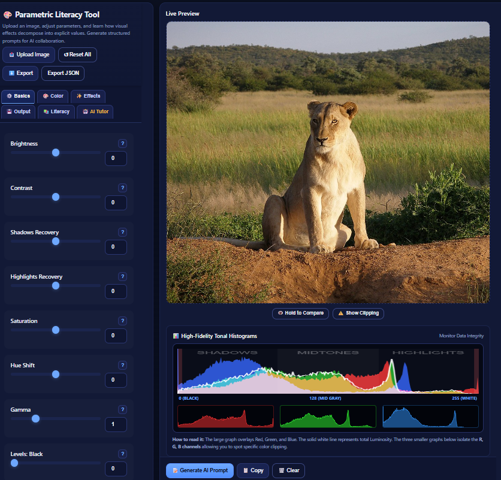

Enhanced Educational Edition
Parametric Literacy Tool
A browser-based educational image-processing tool for learning how visual outcomes can be described as explicit parameter configurations.
Use the live application, read the technical manual, or inspect the source repository and archived release metadata.
Launch ApplicationOpen the interactive image-processing tool
→
Open Technical ManualSoftware architecture, user guide, screenshots, attribution
→
View Source RepositoryGitHub repository and release files
→
Core image editing runs locally in the browser. The optional AI Tutor sends
data to Gemini only when explicitly invoked by the user.
